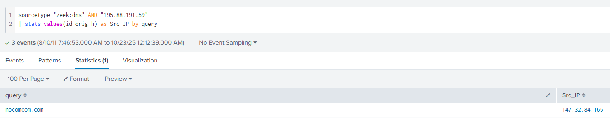

Game Vulnerability Researcher | Anti-Cheat Enthusiast
Here are some of my favorite projects I've worked on
Today, we are going to be looking at NerisBot. A cyberdefense lab published by Cyberdefenders.
If you haven't tried out Cyberdefenders, I highly recommend you check it out! It's a great way to get more acquainted with the defensive side of cybersecurity.
Especially if you're used to working primarily on offensive security. Below we will walk through the NerisBot lab, and I will explain the techniques and tools utilized in order to complete this lab.
Please hover over any words highlighted in purple to get a description of what they mean!
Unusual network activity has been detected within a university environment, indicating potential malicious intent. These anomalies, observed six hours ago, suggest the presence of command and control (C2) communications and other harmful behaviors within the network. Your team has been tasked with analyzing recent network traffic logs to investigate the scope and impact of these activities. The investigation aims to identify command and control servers and uncover malicious interactions.
For this lab, we are working with Splunk. Splunk offers a lot of options when it comes to queries and ways to obtain information depending on how your environment is setup.
Luckily for us, we can see in the question above, that we are going to be working with Suricata logs. Which will help us later on with utilizing the proper syntax in our queries.
Since we are looking for an IP address that was last seen downloading an executable file. We can look through the gathered Suricata logs, and look for any HTTP-related logs regarding our external IP address.
The query I used to find this information was:
sourcetype="suricata" event_type="http" AND http.url="*.exe*"
| stats values(src_ip) as src_ip, values(http.http_user_agent) as user_agent, values(http.url) as url by dest_ip
This query allows us to filter our gathered suricata logs to find what we are looking for. I will explain how the query works below:
This allows us to only look at events that are from Suricata
Filters the Suricata events to only show events related to HTTP
Filters the HTTP events to only include ones involving .exe files
This represents a "pipe". Which takes the output from before the pipe and feeds it as the input to what comes after the pipe.
Gathers specific values from each event so that we can create a table to look through.
One that helps a lot that I found out after reading through Cyberdefender's NerisBot Lab Official Walkthrough.
Is to grab the user-agents value from the HTTP events.
That query will result in these three events being shown:
User-Agents in the context of http request headers. Is a string that lets servers and network peers identify the application, operating system, vendor, and/or version of the requesting user agent as per MDN.
They typically follow a format similar to this for web browsers:
User-Agent: Mozilla/5.0 (<system-information>) <platform> (<platform-details>) <extensions>
As we can see from the picture above, only one event includes a user-agent. This confirms the malicious IP address if we take a look at the destination IP from that event: 195.88.191.59
While this question may not give us a hint as to what kind of logs we can use in order to find the domain name of the attack server. We can look back at the description of the lab and it mentions that use of Zeek logs.
Zeek logs allow us to take a look at network logs that have been gathered. Including DNS logs that may link the malicious IP address back to it's registered domain name.
We can take a look at the event logs relating to our malicious IP with this query:
sourcetype="zeek:dns" AND "195.88.191.59"
| stats values(id_orig_h) as Src_IP by query
This query will find a single event that we can see below.
From this query we can see the domain name that is registered to our malicious IP address: nocomcom.com
Luckily for us, we have already identified the IP address of the targeted system from the breach. If we go back to our first query where we identified the malicious IP that was downloading executables. We can see the IP address that it was targeting.
In this case, what I deemed the "src_ip" is the system that was targeted. Giving us the answer: 147.32.84.165
For this question, we'll utilize another Zeek event. zeek:files, which will allow us to include only events including files. zeek:files provides two IP addresses within the event section. One being from rx_hosts and the other is from tx_hosts.
A quick google search can help us identify that tx_hosts is the IP address that transmitted the file. Which in this case would be our malicious IP. With that in mind we can create this query:
sourcetype="zeek:files" AND tx_hosts="195.88.191.59"
| stats values(md5)
That query will result in these hashes being shown.
Now we've identifed how many files were sent from our IP. Next we need to identify if they are malicious. We can do this by copying the md5 hash and navigating to any antivirus analysis website (I personally use VirusTotal) and see if it matches any known malicious files.
After checking each hash in VirusTotal, we can see that all five are identified as malicious. Thus giving us our final answer of: 5
If you already put in all the hashes into VirusTotal this next question will be very easy. We can look at the files that we found then navigate to the details tab. Here we can scroll down and find the Names section.
According to VirusTotal this section if for "Names with which this file has been submitted or seen in the wild". Looking through the file with the md5 hash: 564048b35da9d447f2e861d5896d908d we can see the name kx4.txt which matches the .txt file we also found in our initial query.
In that same details tab, we can look in the basic properties section and we can see the listed SHA-256 hash.
Giving us our answer of: 6fbc4d506f4d4e0a64ca09fd826408d3103c1a258c370553583a07a4cb9a6530
You have now successfully completed the Cyberdefenders NerisBot lab!
Outside of a few videos, this was my first time interacting with Splunk, Suricata, and Zeek. There was a lot of content I was unfamiliar with and my initial run through of the lab I had to rely heavily on hints as I wasn't sure where to even start.
However, as with anything you learn, it is important to go back over and make sure you understand all the material before moving on. That way you can atleast be more comfortable when you need to interact with the software again.
I hope that my walkthrough was helpful and hopefully you were able to learn something if it was also your first time using these tools!
Please take care, take some time to learn something new, and happy game hacking!
NitoTech